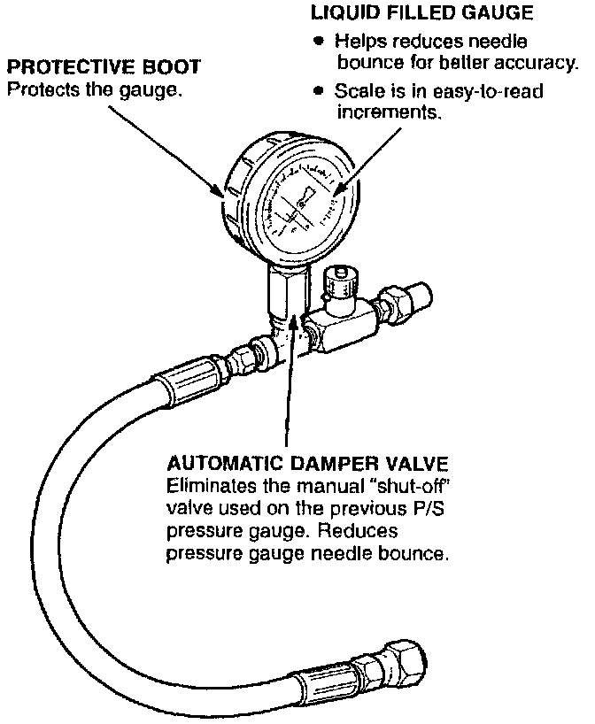
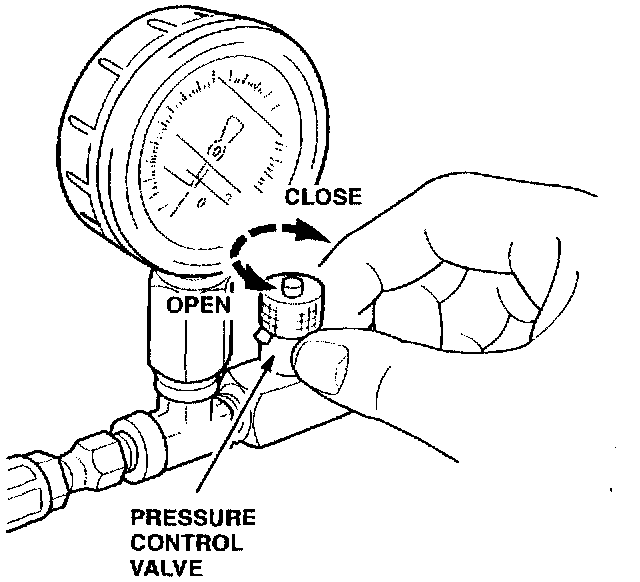

Power Steering Pressure Gauge
September 3, 1996BULLETIN NO.
96-039
YEAR
ALL
MODEL
ALL
Except NSX
VIN APPLICATION
ALL with
Power Steering
Power Steering Pressure Gauge
The new power steering (P/S) pressure gauge, T/N 07406-001000A, supersedes the old power steering pressure gauge. T/N 07406-0010001.

This new power steering pressure gauge has features that you will find helpful when performing power steering pump pressure tests.
TOOL USAGE
1. Follow the appropriate service manual procedure for installing the P/S pressure gauge.
NOTE:
There are no changes to the P/S pressure gauge installation procedure. Use the same adapters as described in the service manual.

2. Fully open the pressure control valve.
3. Start the engine and let it idle.
4. Turn the steering wheel from lock-to-lock several times to warm the fluid to operating temperature.
5. Measure the steady-state fluid pressure with the engine idling.
NOTE:
Refer to the appropriate service manual for steady-state fluid pressure specifications.
6. Gradually close the pressure control valve, and immediately read the pressure.
NOTICE
To avoid overheating and damaging the power steering pump, do not keep the pressure control valve closed for more than 5 seconds.
7. Within 5 seconds, fully open the pressure control valve.
8. Check that the gauge reads the pressures specified in the appropriate service manual. If the reading is low, the pump output is too low for full assist. Repair or replace the pump.